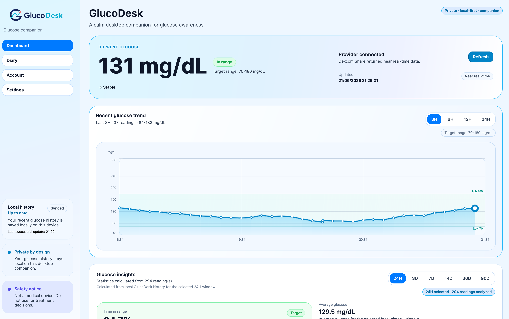
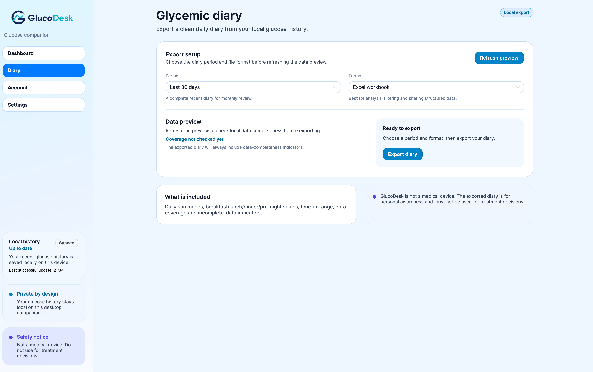
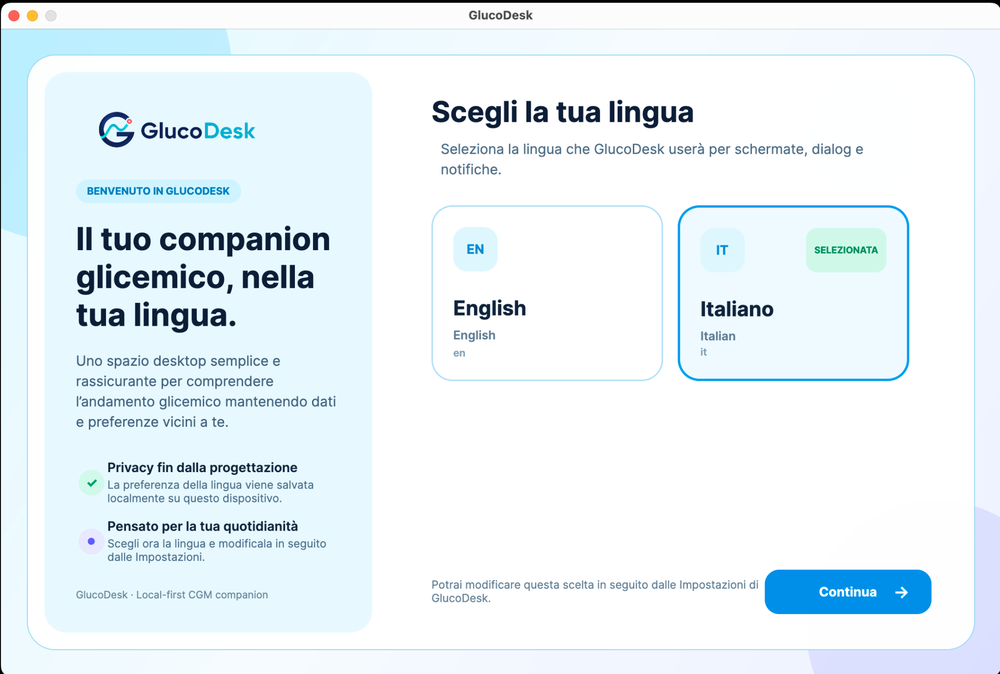

Live dashboard
Current context without the noise.
See your latest reading, trend, target range, recent chart, statistics and data health in a clean responsive layout.
GlucoDesk brings recent glucose context to your desktop with a glanceable menu bar presence, calm awareness notifications, readable local history and bilingual diary exports.

GlucoDesk lives quietly on your desktop and surfaces the context you need without turning every reading into an interruption.
The GlucoDesk G updates as soon as a new reading changes your glucose band, giving you immediate visual feedback in the macOS menu bar or Windows system tray.
GlucoDesk combines live awareness, local history and readable exports in one focused desktop experience.
See your latest reading, trend, target range, recent chart, statistics and data health in a clean responsive layout.
Optional in-app and native notifications use cooldown, snooze, dismiss and privacy-conscious wording to reduce alert fatigue.
Export polished PDF and Excel diaries with daily summaries, time blocks, weekly review, patterns and data completeness.
Weekly comparison, recurring time-block patterns and history completeness turn local readings into more understandable personal context.

Clean surfaces, clear hierarchy and consistent feedback keep glucose context readable throughout the application.
Language selection starts at first launch and continues across dashboard content, settings, notifications, menus and PDF or Excel diary exports.
Runtime language switching
Culture-aware dates and numbers
Localized export content

GlucoDesk does not require a custom GlucoDesk backend for your credentials or glucose history. Settings, cached readings and generated insights are handled locally on your computer.
Choose the package built for your computer. Every download comes from the official GlucoDesk v0.3.0-preview release.
M1 · M2 · M3 · M4
Intel x64 Macs
Windows 10 · Windows 11
GlucoDesk must not be used for treatment decisions, insulin dosing, emergency alerts, diagnosis or as a replacement for approved diabetes applications, CGM systems or medical devices.